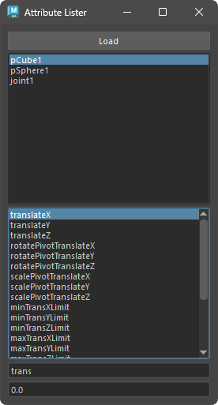

ノードのアトリビュートの状態を変更するツールです。
ノードのアトリビュートの状態を変更するツールです。 主に、アトリビュートのロック、ノードの表示状態、アトリビュートの値を変更することができます。
専用のメニューか、以下のコマンドでツールを起動します。
import faketools.tools.attribute_lister_ui
faketools.tools.attribute_lister_ui.show_ui()

Load ボタンを押して、選択したノードを上のリストにロードします。この時、Shift キーを押しながら選択すると、リストに追加されます。Enter キーを押すと、選択したアトリビュートの値が変更されます。値を変更できる状態は以下の通りです。
値を変更できる場合は、フィールドが以下のように表示されます。
ロックされていないアトリビュート。選択したノードとアトリビュートがひとつでもロックされている場合、値を変更できません。 ロック状態の場合は、フィールドがグレーアウトされます。

接続がないアトリビュート。選択したノードとアトリビュートがひとつでも接続がある場合、値を変更できません。
接続がある場合は、フィールドが黄色く表示されます。

同じ型のアトリビュート同士。選択したノードとアトリビュートがひとつでも異なる型のアトリビュートがある場合、値を変更できません。 異なる型のアトリビュートがある場合は、フィールドが赤く表示されます。

アトリビュートのリスト上で右クリックすると、ノードの状態を変更するメニューが表示されます。

それぞれ選択しているノードのアトリビュートに対して、以下の操作が可能です。
ノードのリスト上で右クリックすると、ノードを選択するメニューが表示されます。